Objective
To investigate the detection of a potentially malicious request containing the whoami command in the HTTP request body, determine whether it indicates a command injection attempt, analyse its origin and impact, and apply appropriate incident response procedures to contain the threat and improve server-side input validation.
Investigation steps
Reviewed the alert that was generated to understand the following info of Event time, IP addresses involved, HTTP Request method and trigger reason and device action.
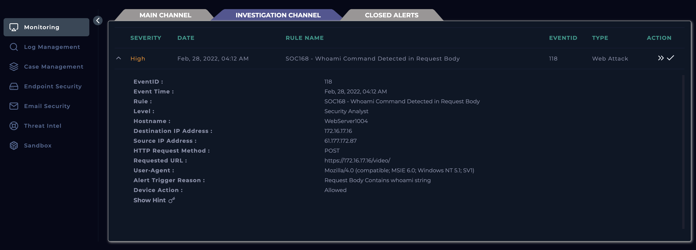
Created a case out of the alert that was generated and started the playbook to follow procedures.
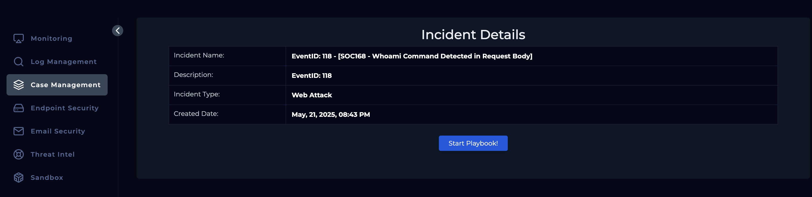
Navigated to endpoint security to identify what devices were involved and whether they were just internal or both internal & external devices. The destination IP was identified as an internal server and the source IP was an external device as no device was found with such an IP in the internal network.
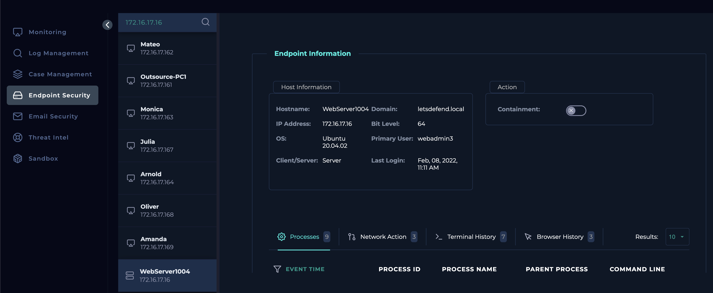
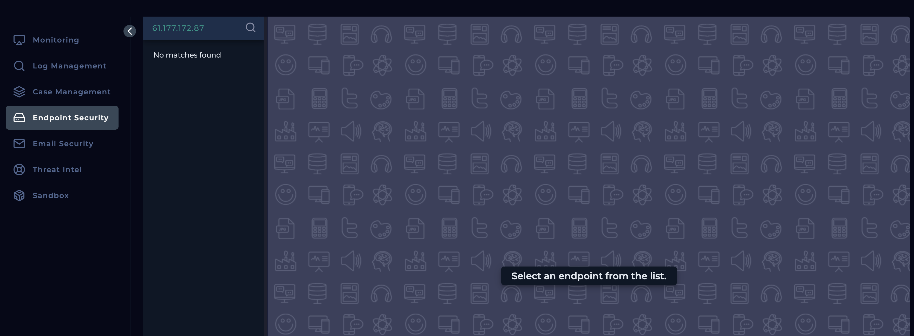
Headed over to the Log management module to review logs and identify what was sent by filtering result using the source IP, which narrowed to 5 results.
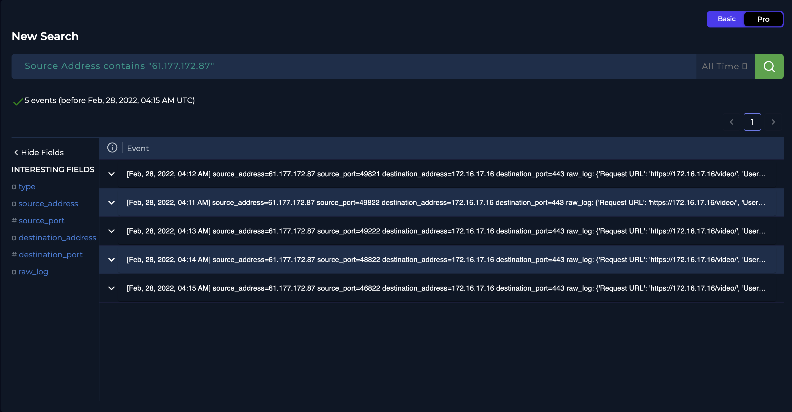
Opened up the log from 4.12pm as this was what triggered the alert and it was evident that this was indicating Command injection attack due to the POST parameter of a WHOAMI command being passed. Analysing this further, we can see the response status is 200 which symbolises OK and response size.
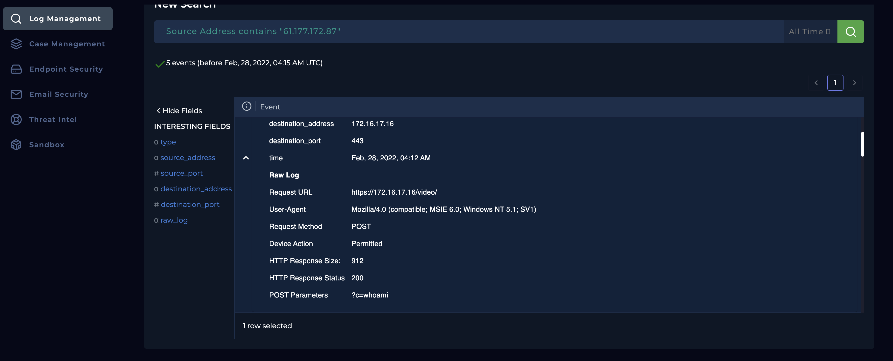
Used threat intelligence tools to search the source IP address and see whether it has been flagged as malicious by using Threat Intel Module, Virus Total, and AbuseIPDB.
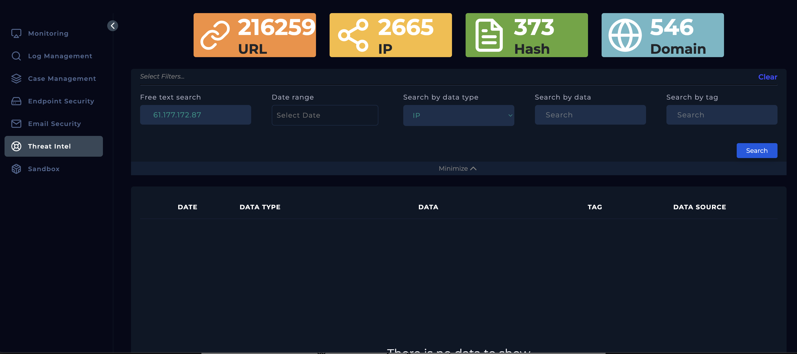
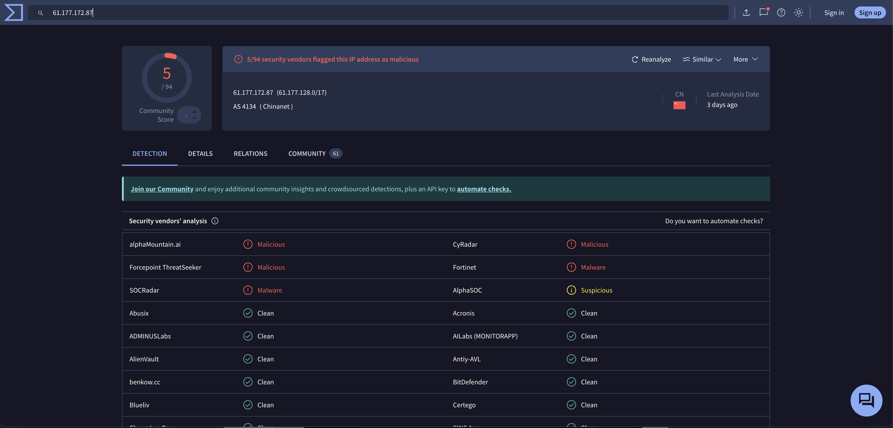
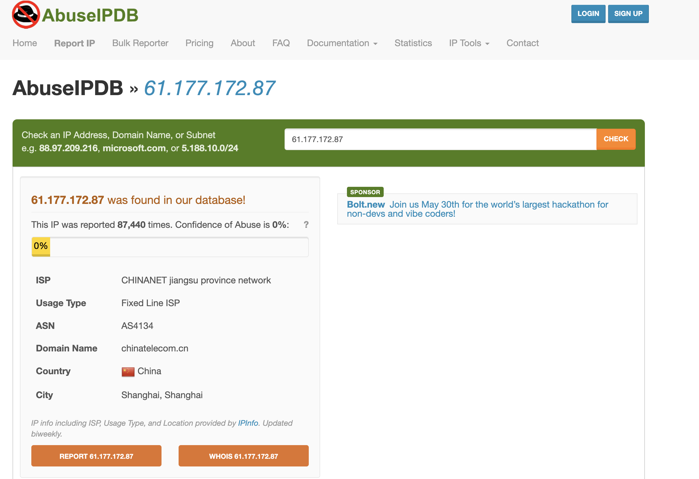
Checked Email Security module to ensure this was not part of a planned test, and results seems to show it wasn’t.
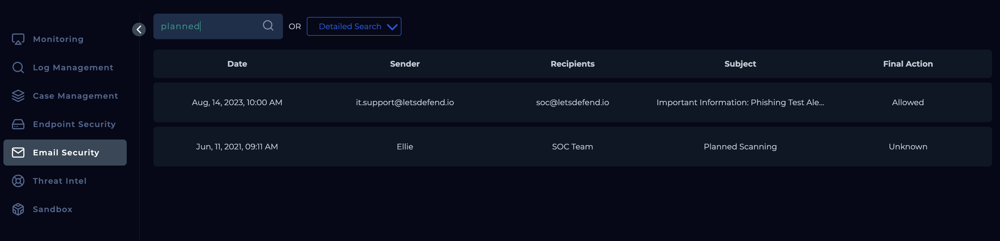
Finally, checked the terminal history of the destination device through EndPoint security to verify if the command/s were executed and by the looks of it, the commands were executed.
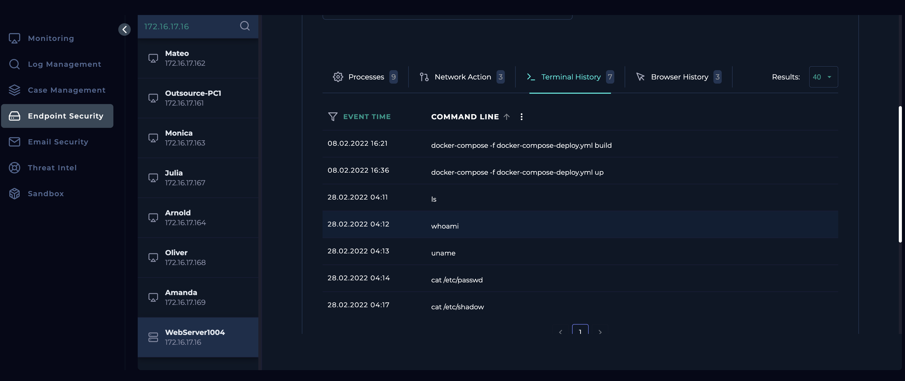
The webserver was contained due to the device being compromised until further investigation is conducted and device is sanitised.
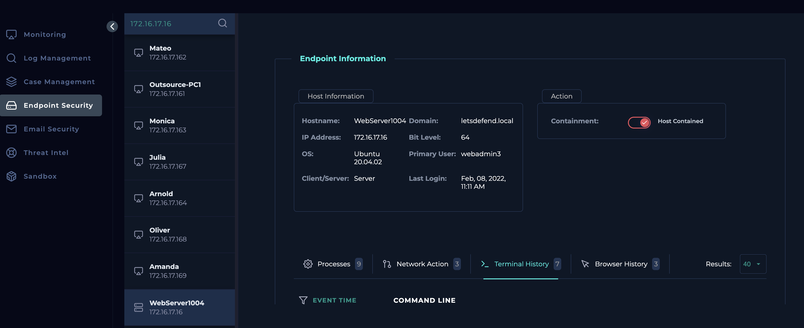
Escalated to Tier 2 as the attack was successful.
Analysis
On February 28, 2022, at 04:12 AM, an alert was triggered after an external device sent a series of HTTP POST requests to an internal web server. The alert specifically flagged the presence of a whoami command in the request body—commonly used in command injection attacks to confirm successful code execution and determine the current user context on the target system.
The source IP address originated from China, with only a small number of threat reports associated with it. Upon reviewing the logs, multiple POST requests were identified within a 5-minute time frame, all containing command-line input. The corresponding HTTP 200 response codes and unusually large response sizes suggest that the commands were successfully executed by the server.
To eliminate the possibility of this being a legitimate security test, internal mail exchanges were reviewed. No communication or scheduled activity was found that would justify this behaviour. Further confirmation came from inspecting the terminal history on the compromised web server, which verified that the injected commands, including whoami, had indeed executed successfully.
As a result, the compromised device has been isolated from the network, and the incident has been escalated to Tier 2 for further investigation and response.
Key learnings
- Gained hands-on experience detecting and analysing command injection attacks, specifically involving the use of the whoami command in HTTP POST request bodies.
- Learned how to identify malicious activity by correlating HTTP response codes (200) and response sizes to confirm successful execution of payloads.
- Strengthened skills in log analysis and identifying patterns of repeated POST requests with embedded system commands over short time intervals.
- Developed investigative techniques using terminal history and email communication review to verify unauthorized access and rule out legitimate testing.
- Understood the importance of geolocation and threat intelligence analysis when assessing source IP addresses, even when they have minimal reputation flags.
- Practiced incident containment procedures and learned the importance of Tier 2 escalation in handling confirmed compromises.
- Gained awareness of how attackers use simple reconnaissance commands like whoami to assess privileges and establish a foothold on vulnerable systems.